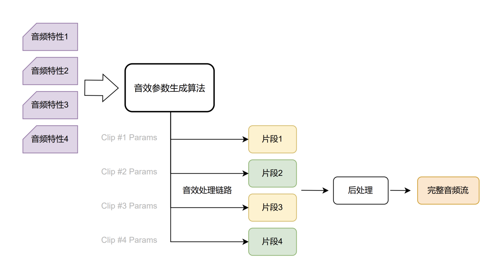
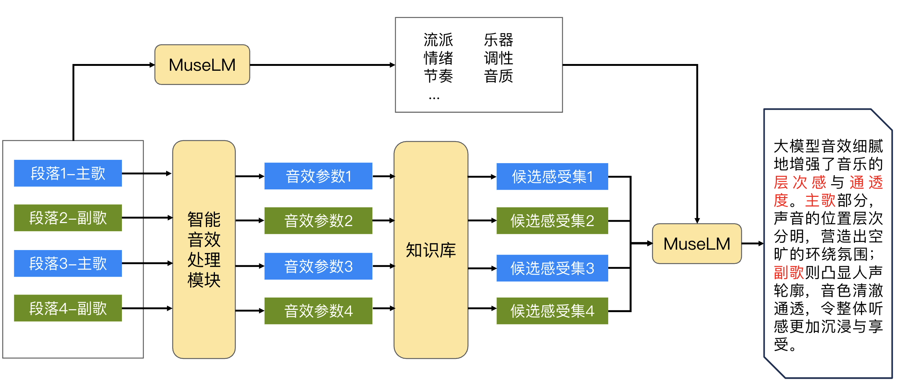

intelligentFx
AI-powered sound effects for QQ Music, adapting audio processing to different sections of a song.
Project Lead, Audio Effects · Deployed in QQ Music
My role
I lead the audio-effects design and application pipeline for intelligentFx, spanning task formulation, data and annotation design, prompting, and the mapping from model outputs to executable audio processing. I work with the language-model team on fine-tuning and productization, connecting music understanding with section-specific processing and effect explanations.

Music understanding
The system takes song audio as input and combines MuseLM's music understanding with the Galaxy Sound expert system to generate effect parameters. Music characteristics inform the processing, connecting content analysis with audio-effect control.
Section-specific processing
Instead of applying one fixed setting throughout a song, intelligentFx generates parameters for individual sections. Verses and choruses can receive different treatments, allowing the listening experience to follow changes in the music.
The playback engine applies these parameters through the audio-processing chain, followed by post-processing to produce the complete audio stream.
Explaining the effects
The explanation pipeline connects section-level effect parameters with a knowledge base of listening descriptors. MuseLM combines these descriptors with its analysis of the music to describe how the processing shapes the listening experience.

Product application
Deployed in QQ Music. December 2024 launch coverage describes the introduction of AI-powered sound effects in QQ Music 14.0, including different treatments for verses and choruses. Launch coverage, December 25, 2024.
Tencent Music's 2024 ESG report describes the combination of MuseLM and the Galaxy Sound expert system for song analysis and effect-parameter generation. TME 2024 ESG Report, page 15.